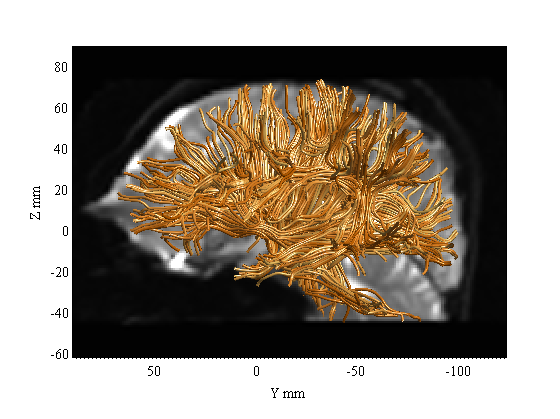
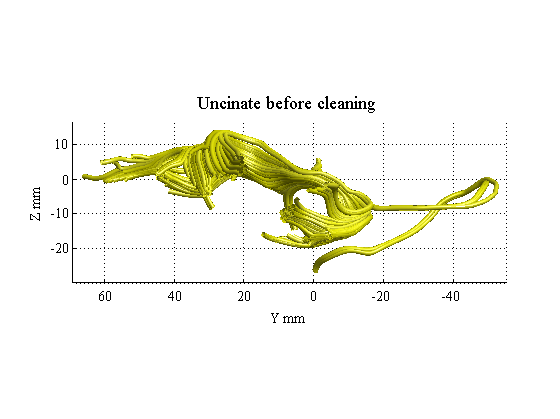
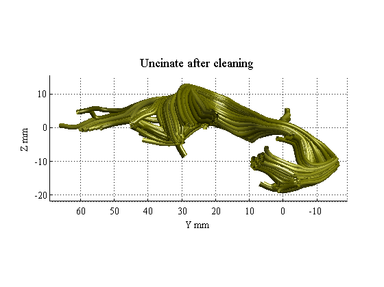
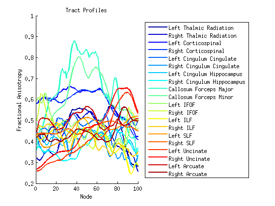
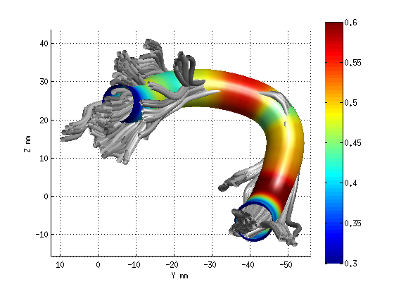
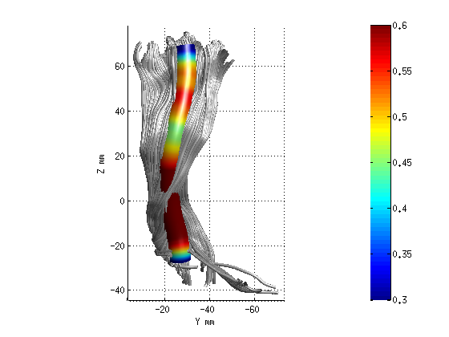
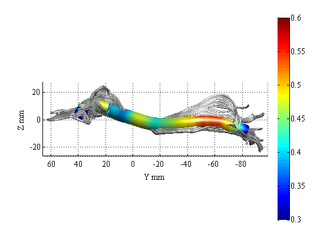
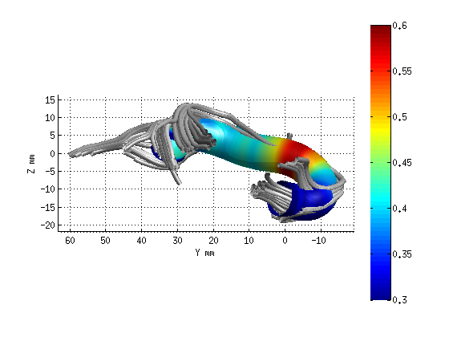

Contents
Example AFQ analysis
Step 1: Whole-brain tractography.
[AFQbase AFQdata AFQfunc AFQutil AFQdoc AFQgui] = AFQ_directories;
sub_dir = fullfile(AFQdata, 'control_01', 'dti30');
dt = dtiLoadDt6(fullfile(sub_dir,'dt6.mat'));
wholebrainFG = AFQ_WholebrainTractography(dt,'test');
AFQ_RenderFibers(wholebrainFG, 'numfibers',1000, 'color', [1 .6 .2]);
b0 = readFileNifti(fullfile(sub_dir,'bin','b0.nii.gz'));
AFQ_AddImageTo3dPlot(b0,[-2, 0, 0]);
scale=[2.0,2.0,2.0]mm, track=1, interp=1, step=1.0mm, fa=0.20, angle=30.0deg, puncture=0.20, minLength=50.0mm, maxLength=250.0mm
Tracking 124442 fibers (1556 fibers per tick):
................................................................................
32704 fibers passed length threshold of 50.0 (out of 124442 seeds).
Elapsed time is 72.827790 seconds.
32704 fibers, mean length 94mm (max 251mm; min 50mm).
mesh can be rotated with arrow keys

Step 2: Fiber tract segmentation
fg_classified = AFQ_SegmentFiberGroups(dt, wholebrainFG);
fg_classified = fg2Array(fg_classified);
AFQ_RenderFibers(fg_classified(3),'numfibers',400,'color',[0 0 1]);
AFQ_RenderFibers(fg_classified(11),'numfibers',400,'color',[0 1 0],'newfig',false)
AFQ_RenderFibers(fg_classified(17),'numfibers',400,'color',[1 1 0],'newfig',false)
AFQ_RenderFibers(fg_classified(19),'numfibers',400,'color',[1 0 0],'newfig',false)
AFQ_AddImageTo3dPlot(b0,[-2, 0, 0]);
You chose to recompute ROIs
Fibers that get as close to the ROIs as 2mm will become candidates for the Mori Groups
Direct calls to spm_defauts are deprecated.
Please use spm('Defaults',modality) or spm_get_defaults instead.
Smoothing by 0 & 8mm..
Coarse Affine Registration..
Fine Affine Registration..
3D CT Norm...
iteration 1: FWHM = 13.31 Var = 24.3369
iteration 2: FWHM = 10.26 Var = 2.3268
iteration 3: FWHM = 9.9 Var = 1.82368
iteration 4: FWHM = 9.811 Var = 1.68895
iteration 5: FWHM = 9.746 Var = 1.62451
iteration 6: FWHM = 9.729 Var = 1.60517
iteration 7: FWHM = 9.714 Var = 1.59288
iteration 8: FWHM = 9.708 Var = 1.5878
iteration 9: FWHM = 9.7 Var = 1.58208
iteration 10: FWHM = 9.701 Var = 1.58178
iteration 11: FWHM = 9.698 Var = 1.58025
iteration 12: FWHM = 9.698 Var = 1.57987
iteration 13: FWHM = 9.697 Var = 1.57926
iteration 14: FWHM = 9.697 Var = 1.57926
iteration 15: FWHM = 9.696 Var = 1.57881
iteration 16: FWHM = 9.697 Var = 1.57881
Computing inverse deformation...
dtiCleanFibers: Keeping 32549 out of 32704 fibers.
dtiSplitInterhemisphericFibers: Splitting every fiber below Z=-10
mesh can be rotated with arrow keys
ans =
[]
ans =
[]
ans =
[]

Step 3: Fiber tract cleaning
uf = fg_classified(17);
maxDist = 4;
maxLen = 4;
numNodes = 30;
M = 'mean';
maxIter = 1;
count = true;
uf_clean = AFQ_removeFiberOutliers(uf,maxDist,maxLen,numNodes,M,count,maxIter);
AFQ_RenderFibers(uf,'numfibers',1000,'color',[1 1 0]);
title('Uncinate before cleaning','fontsize',18)
AFQ_RenderFibers(uf_clean,'numfibers',1000,'color',[.5 .5 0]);
title('Uncinate after cleaning','fontsize',18)
for ii = 1:20
fg_clean(ii) = AFQ_removeFiberOutliers(fg_classified(ii),maxDist,maxLen,numNodes,M,count,maxIter);
end
Left Uncinate number of fibers: 227
Left Uncinate number of fibers: 213
mesh can be rotated with arrow keys
mesh can be rotated with arrow keys
Left Thalamic Radiation number of fibers: 347
Left Thalamic Radiation number of fibers: 313
Right Thalamic Radiation number of fibers: 408
Right Thalamic Radiation number of fibers: 370
Left Corticospinal number of fibers: 1038
Left Corticospinal number of fibers: 971
Right Corticospinal number of fibers: 1310
Right Corticospinal number of fibers: 1266
Left Cingulum Cingulate number of fibers: 119
Left Cingulum Cingulate number of fibers: 106
Right Cingulum Cingulate number of fibers: 49
Right Cingulum Cingulate number of fibers: 40
Left Cingulum Hippocampus number of fibers: 103
Left Cingulum Hippocampus number of fibers: 95
Right Cingulum Hippocampus number of fibers: 77
Callosum Forceps Major number of fibers: 301
Callosum Forceps Major number of fibers: 287
Callosum Forceps Minor number of fibers: 1198
Callosum Forceps Minor number of fibers: 1169
Left IFOF number of fibers: 429
Left IFOF number of fibers: 390
Right IFOF number of fibers: 298
Right IFOF number of fibers: 272
Left ILF number of fibers: 170
Left ILF number of fibers: 159
Right ILF number of fibers: 314
Right ILF number of fibers: 289
Left SLF number of fibers: 216
Left SLF number of fibers: 198
Right SLF number of fibers: 382
Right SLF number of fibers: 367
Left Uncinate number of fibers: 227
Left Uncinate number of fibers: 213
Right Uncinate number of fibers: 491
Right Uncinate number of fibers: 460
Left Arcuate number of fibers: 378
Left Arcuate number of fibers: 349
Right Arcuate number of fibers: 214
Right Arcuate number of fibers: 198
 
Step 4: Compute tract profiles
numNodes = 100;
[fa md rd ad] = AFQ_ComputeTractProperties(fg_clean, dt, numNodes);
figure; hold('on');
set(gca,'ColorOrder',jet(20));
plot(fa,'linewidth',2);
xlabel('Node');
ylabel('Fractional Anisotropy');
title('Tract Profiles');
fgNames={'Left Thalmic Radiation','Right Thalmic Radiation'...
'Left Corticospinal','Right Corticospinal', 'Left Cingulum Cingulate'...
'Right Cingulum Cingulate', 'Left Cingulum Hippocampus'...
'Right Cingulum Hippocampus', 'Callosum Forceps Major'...
'Callosum Forceps Minor', 'Left IFOF','Right IFOF','Left ILF'...
'Right ILF','Left SLF','Right SLF','Left Uncinate','Right Uncinate'...
'Left Arcuate','Right Arcuate'};
legend(fgNames,'Location','EastOutside' );

Step 5: Render Tract Profiles
AFQ_RenderFibers(fg_clean(19),'dt',dt);
AFQ_RenderFibers(fg_clean(3),'dt',dt);
AFQ_RenderFibers(fg_clean(11),'dt',dt);
AFQ_RenderFibers(fg_clean(17),'dt',dt);
mesh can be rotated with arrow keys
mesh can be rotated with arrow keys
mesh can be rotated with arrow keys
mesh can be rotated with arrow keys
   